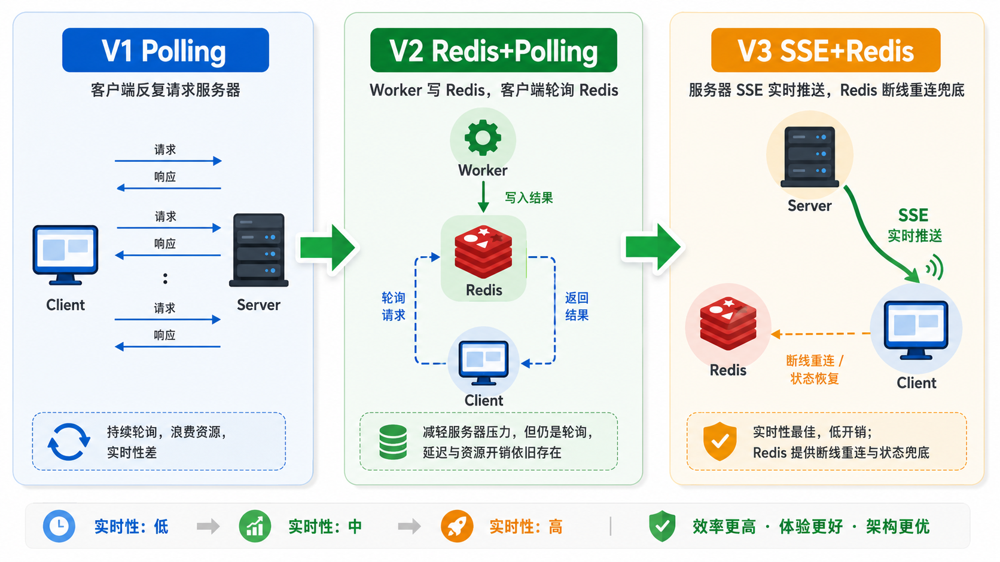

在 MathTasks 项目中，AI 处理一道数学题需要数分钟——难度评估、向量查重、质量检测三个异步队列并行跑。用户不能盯着空白页面干等。我们选择 SSE（Server-Sent Events） 而非 WebSocket，这篇文章从架构设计、核心源码、到踩坑经验全部分享。
两者都能做服务端推送，但场景不同：
| 维度 | SSE | WebSocket |
|---|---|---|
| 通信方向 | 单向（服务端 → 客户端） | 双向 |
| 协议 | HTTP（标准 HTTP 长连接） | WS（独立协议，需升级握手） |
| 断线重连 | 浏览器原生支持（EventSource API） | 需手动实现 |
| Nginx 代理 | 开箱即用（普通 HTTP 代理即可） | 需额外配置 Upgrade 头 |
MathTasks 的需求是"服务端推送进度给前端，前端不主动发消息"。SSE 完美匹配——更轻量、更易部署、浏览器自带重连。
核心代码在 services/sse_manager.py，设计为一个全局单例：
class SSEConnectionManager:
"""SSE 连接管理器（全局单例）"""
def __init__(self) -> None:
self.clients: Dict[str, asyncio.Queue] = {} # client_id → 消息队列
self.user_clients: Dict[int, Set[str]] = defaultdict(set) # user_id → client_id 集合
self._last_activity: Dict[str, float] = {} # 最后活跃时间戳
self._cleanup_task: asyncio.Task | None = None
self._is_shutting_down = False关键设计决策：
async def register_client(self, client_id: str, user_id: int) -> asyncio.Queue:
queue: asyncio.Queue = asyncio.Queue(maxsize=200)
self.clients[client_id] = queue
self.user_clients[user_id].add(client_id)
self._last_activity[client_id] = time.time()
# 确保清理协程已启动
if self._cleanup_task is None or self._cleanup_task.done():
self._cleanup_task = asyncio.create_task(self._cleanup_stale_connections())
return queuedef push_to_user(self, user_id: int, message: SSEMessage) -> None:
client_ids = self.user_clients.get(user_id, set())
if not client_ids:
return # 无活跃连接，消息丢弃
data = message.model_dump()
for cid in list(client_ids):
self._enqueue(cid, data)def _enqueue(self, client_id: str, data: dict) -> None:
queue = self.clients.get(client_id)
if not queue:
return
try:
queue.put_nowait(data)
self._last_activity[client_id] = time.time()
except asyncio.QueueFull:
logger.warning("客户端 %s 队列已满，丢弃消息", client_id)put_nowait 是非阻塞的——如果队列满了直接丢弃并打 Warning，不会卡住生产者线程。
HTTP 长连接可能被中间代理（Nginx、LB）静默断开。心跳是保活的关键：
# SSE 路由中的心跳逻辑
_HEARTBEAT_INTERVAL = 15 # 每 15 秒发一次心跳
async def event_generator():
last_heartbeat = time.time()
while True:
try:
# 等待消息，1 秒超时用于检查心跳
message = await asyncio.wait_for(queue.get(), timeout=1.0)
yield "data: " + json.dumps(message) + "\n\n"
except asyncio.TimeoutError:
pass # 超时不是错误，只是没消息
# 定期发送心跳
now = time.time()
if now - last_heartbeat >= _HEARTBEAT_INTERVAL:
yield "data: " + json.dumps({
"type": "heartbeat",
"payload": {"server_time": int(now * 1000)},
"timestamp": int(now * 1000)
}) + "\n\n"
sse_manager.touch(client_id) # 更新活跃时间
last_heartbeat = now心跳做了两件事：
客户端可能异常断开（关浏览器、网络切换），服务端如果不清这些"僵尸连接"，内存会慢慢泄漏：
async def _cleanup_stale_connections(self) -> None:
"""每 30 秒检查一次，120 秒无活动的连接视为僵尸"""
stale_timeout = 120
check_interval = 30
while True:
await asyncio.sleep(check_interval)
now = time.time()
stale = [
cid for cid, ts in self._last_activity.items()
if now - ts > stale_timeout
]
for cid in stale:
logger.info("清理僵尸连接 client_id=%s", cid)
await self.unregister_client(cid)设计要点：
服务重启时，应该通知所有已连接客户端：
# 设置停机标志
sse_manager.set_shutdown(True)
# SSE 路由检查停机状态
async def event_generator():
...
while True:
...
if sse_manager.is_shutting_down():
yield "data: " + json.dumps({
"type": "server_shutdown",
"payload": {"reason": "shutdown"}
}) + "\n\n"
break # 退出事件循环
# 新连接在停机期间被拒绝
@router.get("/stream")
async def sse_stream(request: Request):
if sse_manager.is_shutting_down():
raise HTTPException(status_code=503, detail="服务正在关闭")SSE 连接断了之后，前端利用 EventSource 的自动重连特性重新建立连接。但重连后如何恢复之前的进度？
解决方案：Worker 处理进度时不只发 SSE，同时写入 Redis。前端重连后，先请求当前进度快照（从 Redis 读），然后再订阅 SSE：
# 前端重连流程
1. EventSource 检测到连接断开
2. 浏览器自动重连（EventSource 原生行为）
3. 收到 "connected" 事件后，请求 GET /api/progress/{task_id}
4. 后端从 Redis 读取当前进度，一次性返回快照
5. 前端渲染快照，同时继续监听 SSE 增量更新这个"Redis 做状态兜底 + SSE 做实时推送"的双通道设计，是我们在 MathTasks 中迭代出来的成熟方案。
SSE 经过 Nginx 反向代理时，需要关闭缓冲：
# Nginx 配置 SSE 端点
location /api/sse/stream {
proxy_pass http://backend;
proxy_http_version 1.1;
proxy_set_header Connection "";
proxy_buffering off; # ← 关键：关闭代理缓冲
proxy_cache off;
proxy_read_timeout 86400s; # 长连接超时设为 24 小时
}服务端也要设置响应头：
return StreamingResponse(
event_generator(),
media_type="text/event-stream",
headers={
"Cache-Control": "no-cache",
"Connection": "keep-alive",
"X-Accel-Buffering": "no", # 显式禁用 Nginx 缓冲
},
)
这不是一开始就设计出来的。实际经历了三个版本的迭代：
每次演进都是被"用户体感延迟"驱动的。V3 后，题目处理进度从"2 秒滞后"变成了"实时"。
一个生产级的 SSE 实现，至少需要考虑这 5 点：
这 5 点齐了，你的 SSE 方案就敢说"生产可用"。